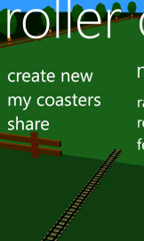
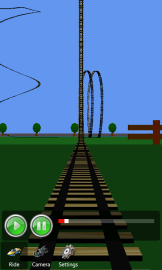
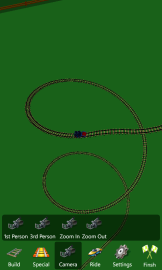

Roller Coaster
Build and Ride Roller Coasters! A Easy to use yet flexibly builder allows for very creative coasters. Create loops, spins, and even go upside down. Coaster stats show a general snap shot of your coaster. Multiple Viewpoints, with the ability to look around while riding in realistic physics. Customize your coaster with multiple themes including classic and Halloween.
Roller Coaster Is(was) # 1 Top Free Game on Windows Phone in the US, Japan, Italy, United Kingdom, Germany. Roller Coaster is a simulation game built using XNA and Silverlight. This was joint project with my brother Mark Dickinson and me.
Note: This game is no longer available on current devices. If you would like this game to be ported to newer platforms, please contact us at rollercoaster@jdsoftwarellc.com and demand this game be brought back.
  